Kubernetes + EKS + Docker + Node
- Create a website to convert our images to black and white
- Create 3 microservices : the website, the black and white image converter, the uploader to S3
- Use Docker-compose to orchestrate these microservices locally
- Create a Kubernetes cluster on EKS with eksctl
- Create 3 ECR registries and push the production docker images of our services
- Putting the application online with kubectl
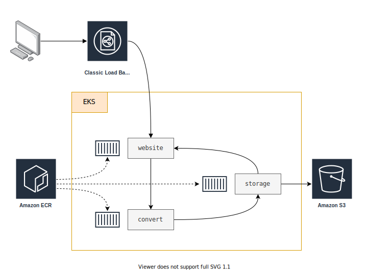
Install, setup and explore the project
Get the code from this github repository :
# download the code
$ git clone \
--depth 1 \
https://github.com/jeromedecoster/aws-black-white-gallery-kubernetes-docker-node.git \
/tmp/aws
# cd
$ cd /tmp/aws
To setup the project, run the following command :
# install eksctl + kubectl, create aws user + s3 bucket
$ make setup
This command will :
- Install eksctl if it is not already installed.
- Install kubectl if it is not already installed.
- Creates an AWS Power User for the project.
- Creates an S3 bucket.
- Creates an .env file from the .env.sample file. You can modify some variables if you wish.
Let’s test the image conversion service by starting the development version :
# convert service local development (on current machine, by calling npm script directly)
$ make convert-dev
This script performs the following :
$ DOTENV_CONFIG_PATH=../.env DEBUG=convert npx nodemon --require dotenv/config server.js
We can test the service with curl :
$ cd convert
# convert the jpeg to greyscale
$ curl http://localhost:4000/greyscale \
--form "file=@test/duck.jpg" \
--silent \
--output /tmp/duck.jpg
It works :
We can stop the service with Ctrl + C.
The services have a series of tests of which here are some extracts :
const expect = require('chai').expect
const request = require('supertest')
const app = require('../app.js')
describe('app.js routes', function () {
it('GET /', function (done) {
request(app)
.get('/')
.expect(200)
.end(function (err, res) {
if (err) return done(err)
expect(res.text).to.include('API')
done()
})
})
it('GET /healthcheck', function (done) {
request(app)
.get('/healthcheck')
.expect(200)
.expect('Content-Type', /json/)
.end(function (err, res) {
if (err) return done(err)
const data = JSON.parse(res.text)
expect(data.uptime).to.not.be.NaN
expect(data.uptime).to.be.above(0)
done()
})
})
})
describe('app.js POST /greyscale', function () {
it('no file', function (done) {
request(app)
.post('/greyscale')
.expect(400)
.end(function (err, res) {
if (err) return done(err)
expect(res.text).to.match(/file is required/i)
done()
})
})
// ...
})
We run the tests with this command :
# run convert service tests (on current machine, by calling npm script directly)
$ make convert-test
This script performs the following :
$ DOTENV_CONFIG_PATH=../.env npx mocha --require dotenv/config 'test/*.test.js'
Run the site locally
The application is an association of 3 microservices :
- website : which displays the gallery and allows the upload of new images to convert.
- convert : which converts JPG, PNG or WEBP images to black and white.
- storage : which stores the converted image in an S3 bucket.
It is possible to start the services separately like this :
# sample script, don't do this !
$ make convert-dev
$ make storage-dev
$ make website-dev
But we choose to use docker-compose to orchestrate the local development :
# local development with docker-compose
$ make dev
This script performs the following :
$ docker-compose \
--file docker-compose.dev.yml \
--project-name compose_gallery_kubernetes_dev \
--env-file .env \
up
The docker-compose.dev.yml file defines the 3 services like this :
version: "3"
services:
convert:
build:
context: ./convert
dockerfile: Dockerfile.dev
# define volume to enable livereload
volumes:
- "./convert:/app"
# port variables are not received from the env_file below
# but defined by `docker-compose --env-file <file> up`
ports:
- "${CONVERT_PORT}:${CONVERT_PORT}"
# define environment variables in the built image
env_file:
- .env
storage:
build:
context: ./storage
dockerfile: Dockerfile.dev
# define volume to enable livereload
volumes:
- "./storage:/app"
# port variables are not received from the env_file below
# but defined by `docker-compose --env-file <file> up`
ports:
- "${STORAGE_PORT}:${STORAGE_PORT}"
# define environment variables in the built image
env_file:
- .env
website:
build:
context: ./website
dockerfile: Dockerfile.dev
volumes:
- "./website:/app"
ports:
- "${WEBSITE_PORT}:${WEBSITE_PORT}"
env_file:
- .env
environment:
DOCKER_COMPOSE: "true"
The Dockerfile.dev file from the convert service :
FROM node:14.5-slim AS build
WORKDIR /app
ADD package.json .
RUN npm install
FROM node:14.5-slim
WORKDIR /app
COPY --from=build /app .
ADD . .
CMD ["npm", "run", "dev"]
Our services are launched, we can go and see http://localhost:3000 :
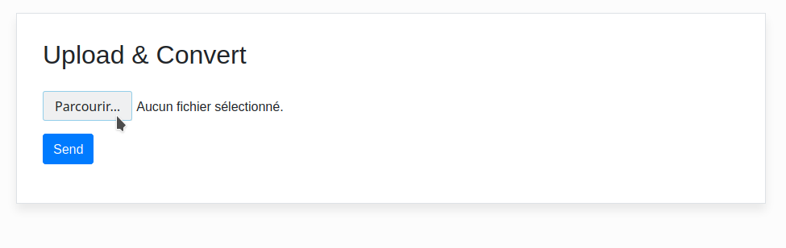
We choose an image to upload then click the Send button :
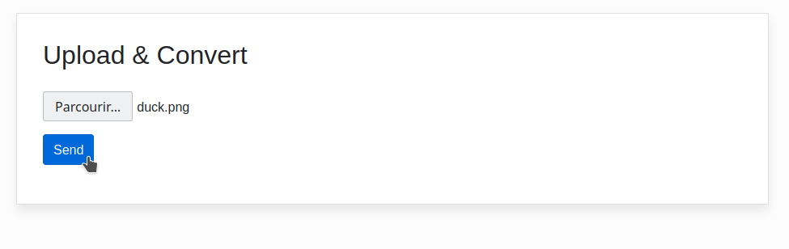
The page is reloaded, we can see the black and white image :
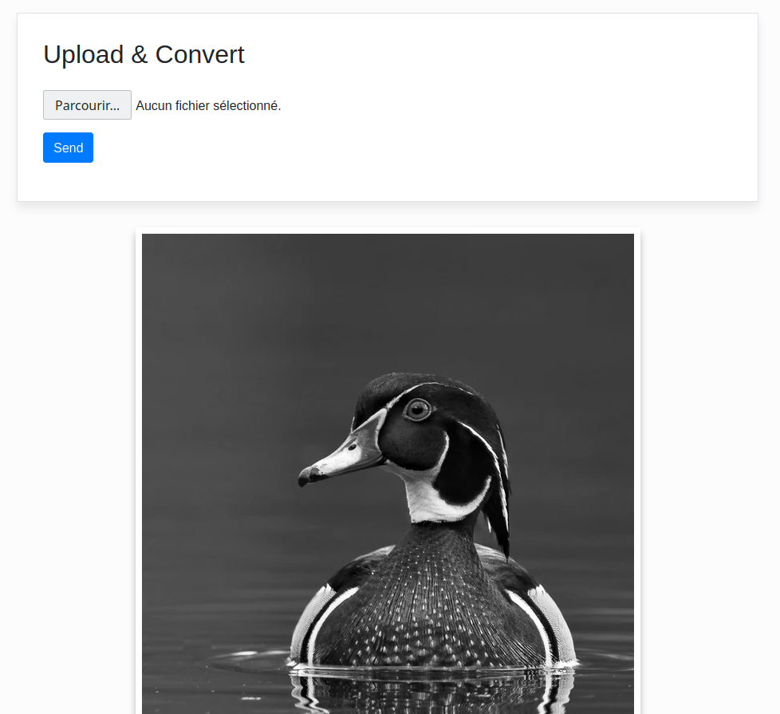
We can see the uploaded file on S3 :
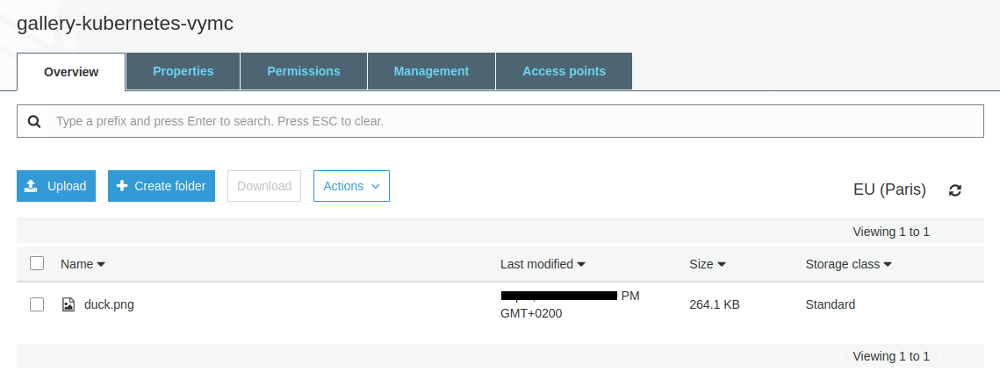
The upload is done via the storage service, here is an extract :
app.post('/upload', upload.any(), async (req, res) => {
debug('req.files:', req.files)
if (req.files == undefined || req.files.length == 0) {
return res.status(400).send('Field file is required')
}
const file = req.files.find(e => e.fieldname == 'file')
debug('file:', file)
const params = {
ContentType: 'image',
Bucket: process.env.AWS_S3_BUCKET,
Key: file.originalname,
Body: file.buffer,
ACL : 'public-read'
}
try {
const result = await s3.upload(params).promise()
debug('result:', result)
return res.send(result.Location)
} catch(err) {
return res.status(400).send(`Error: ${err.message}`)
}
})
Hosting the production image on the docker hub
We build the 3 production images and push them with this command :
# build production images and push to ECR
$ make build-push
This command does this :
# create ECR repository
$ aws ecr create-repository \
--repository-name convert \
--region $AWS_REGION \
--profile $AWS_PROFILE
# get repository URI
$ REPOSITORY_URI=$(aws ecr describe-repositories \
--query "repositories[?repositoryName == 'convert'].repositoryUri" \
--region $AWS_REGION \
--profile $AWS_PROFILE \
--output text)
# root account id
$ ACCOUNT_ID=$(aws sts get-caller-identity \
--query 'Account' \
--profile $AWS_PROFILE \
--output text)
# add login data into /home/$USER/.docker/config.json (create or update authorization token)
$ aws ecr get-login-password \
--region $AWS_REGION \
--profile $AWS_PROFILE \
| docker login \
--username AWS \
--password-stdin $ACCOUNT_ID.dkr.ecr.$AWS_REGION.amazonaws.com
# build, tag and push storage
$ docker image build \
--tag convert:latest \
--tag convert:1.0.0 \
.
$ docker tag convert:latest $REPOSITORY_URI:latest
$ docker tag convert:latest $REPOSITORY_URI:1.0.0
$ docker push $REPOSITORY_URI:latest
$ docker push $REPOSITORY_URI:$VERSION
The script build 3 production images and push them on ECR.
The state of my ECR repositories page before the script execution :
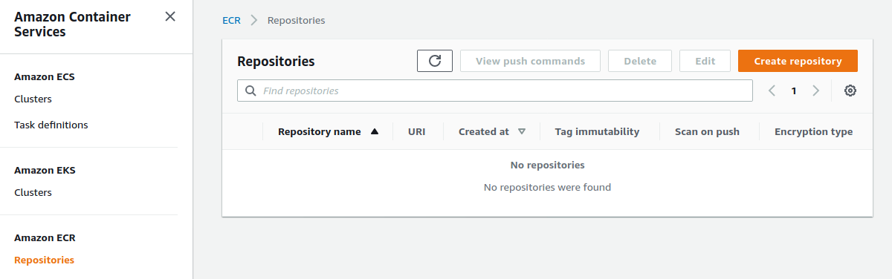
The creation of the production image uses a specific, optimized Dockerfile.
The optimization of the image weight is achieved with :
- The declaration of the environment variable
NODE_ENV=production. The installation of npm modules will be reduced. - The use of node-prune to reduce the weight of the node_modules folder.
FROM softonic/node-prune AS prune
FROM node:14.5-alpine AS build
# With `NODE_ENV=production` npm install will skip devDependencies packages
ENV NODE_ENV production
WORKDIR /app
COPY --from=prune /go/bin/node-prune /usr/local/bin/
ADD . .
RUN npm install --quiet
RUN node-prune
FROM node:14.5-alpine
ENV NODE_ENV production
WORKDIR /app
COPY --from=build /app .
CMD ["node", "server.js"]
The build and push action is quite long. We end up with our 3 repositories :
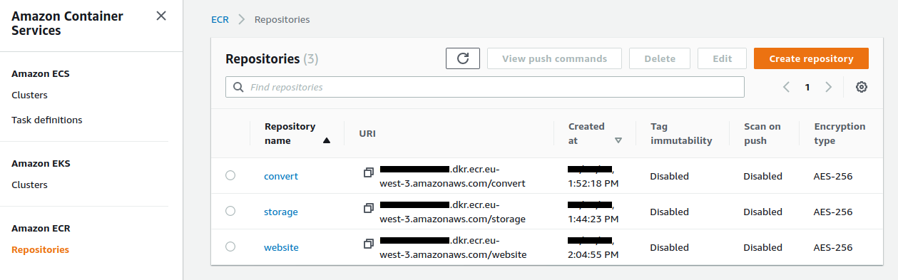
The uploaded convert image :
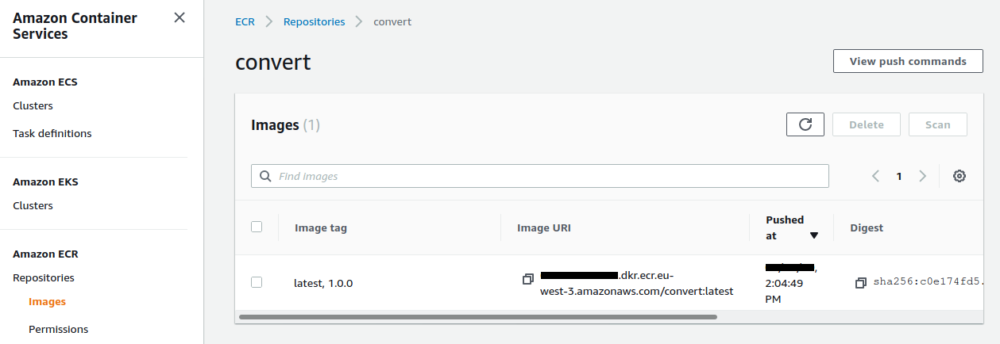
Creating the Kubernetes cluster
We launch the creation of the EKS cluster. You have to be patient because it takes about 15 minutes !
$ make cluster-create
The creation of the cluster is managed via a Cloudformation Stack :
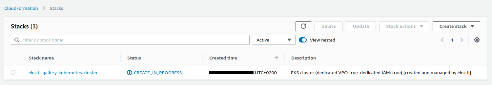
Here are some more details :
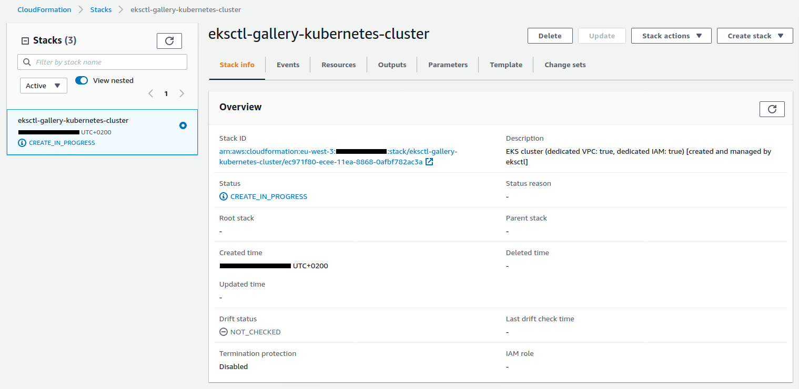
We see the cluster being created in the EKS interface :
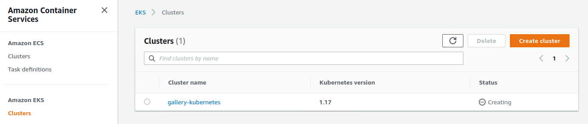
Once the deployment is complete, we check that kubectl points to the right cluster :
$ kubectl config current-context
user@gallery-kubernetes.eu-west-3.eksctl.io
We query the namespaces :
$ kubectl get ns
NAME STATUS AGE
default Active 20m
kube-node-lease Active 20m
kube-public Active 20m
kube-system Active 20m
We will deploy the services :
$ make cluster-deploy
namespace/gallery-kubernetes created
secret/gallery-kubernetes created
deployment.apps/storage created
service/storage created
deployment.apps/convert created
service/convert created
deployment.apps/website created
service/website created
This command takes the templates present in the k8s directory and injects the variables contained in the .env file previously created :
The starting namespace.yml template :
apiVersion: v1
kind: Namespace
metadata:
name: {{PROJECT_NAME}}
Go through a bash script similar to this :
$ source .env
$ sed --expression "s|{{PROJECT_NAME}}|$PROJECT_NAME|g" namespace.yml
The template therefore becomes :
apiVersion: v1
kind: Namespace
metadata:
name: gallery-kubernetes
The template is sent directly to the cluster by adding :
$ source .env
$ sed --expression "s|{{PROJECT_NAME}}|$PROJECT_NAME|g" namespace.yml \
| kubectl apply --filename -
If we query the namespaces again we see the one we just added :
$ kubectl get ns
NAME STATUS AGE
default Active 22m
gallery-kubernetes Active 10s
kube-node-lease Active 22m
kube-public Active 22m
kube-system Active 22m
We query the pods :
$ kubectl get pods -n gallery-kubernetes
NAME READY STATUS RESTARTS AGE
convert-5c85c7c869-5vzgd 1/1 Running 0 22m
convert-5c85c7c869-xlvwq 1/1 Running 0 22m
storage-66b6998c9-s46m5 1/1 Running 0 40s
storage-66b6998c9-wjsxd 1/1 Running 0 40s
website-584cc7f864-bmjdg 1/1 Running 0 22m
website-584cc7f864-th4fx 1/1 Running 0 22m
The website service uses a LoadBalancer type :
apiVersion: v1
kind: Service
metadata:
name: website
namespace: {{PROJECT_NAME}}
labels:
app: website
spec:
selector:
app: website
ports:
- port: 80
protocol: TCP
targetPort: {{WEBSITE_PORT}}
type: LoadBalancer
We get the URL of the LoadBalancer with this command :
$ make cluster-elb
This command does this :
$ kubectl get svc \
--namespace gallery-kubernetes \
--output jsonpath="{.items[?(@.metadata.name=='website')].status.loadBalancer.ingress[].hostname}"
By using this URL in our browser we should see the service working. We select an image type :
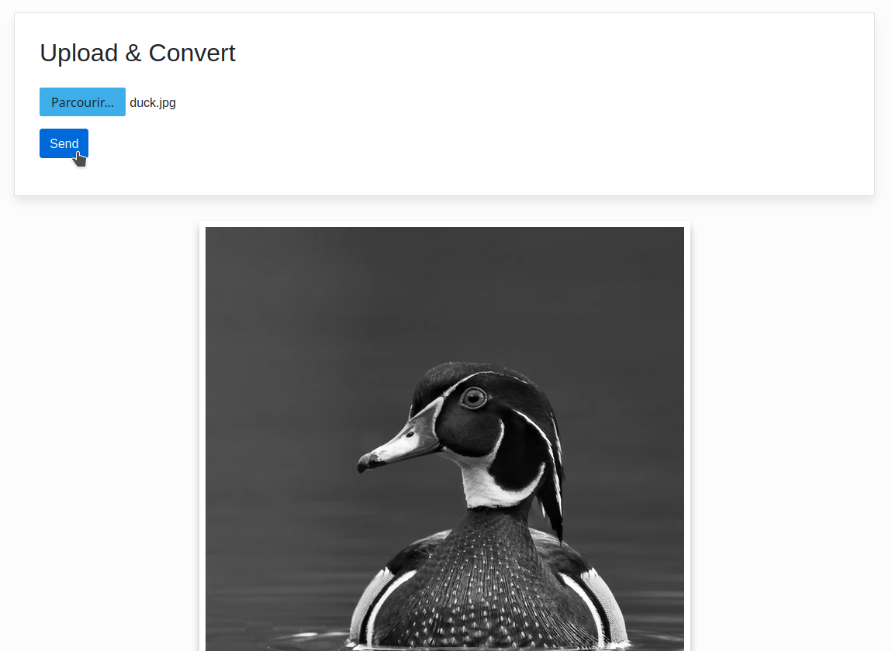
By clicking on the Send button, the page reloads and displays the converted image in black and white :
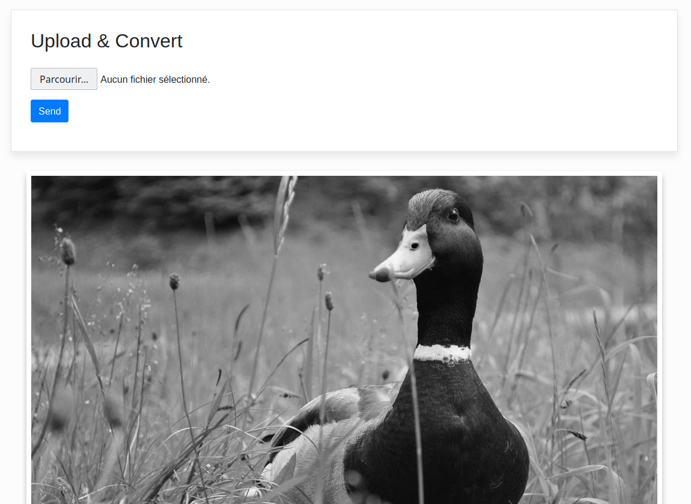
We can query the logs of the convert service with this command :
$ make cluster-log-convert
Listening on port 4000
2020-01-01T09:00:00.000Z convert req.files: [
{
fieldname: 'file',
originalname: 'duck.jpg',
encoding: '7bit',
mimetype: 'image/jpeg',
buffer: <Buffer ff d8 ff e0 00 10 4a 46 49 46 00 01 01 00 00 01 00 01 ... 243154 more bytes>,
size: 243204
}
]
This command does this :
$ kubectl logs \
--namespace gallery-kubernetes \
--selector app=convert \
--tail=1000
The demonstration is over. We can delete our cluster with this command :
$ make cluster-delete